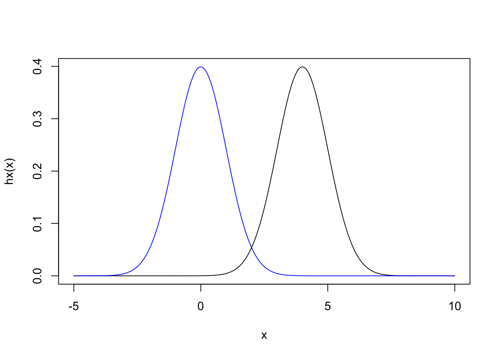
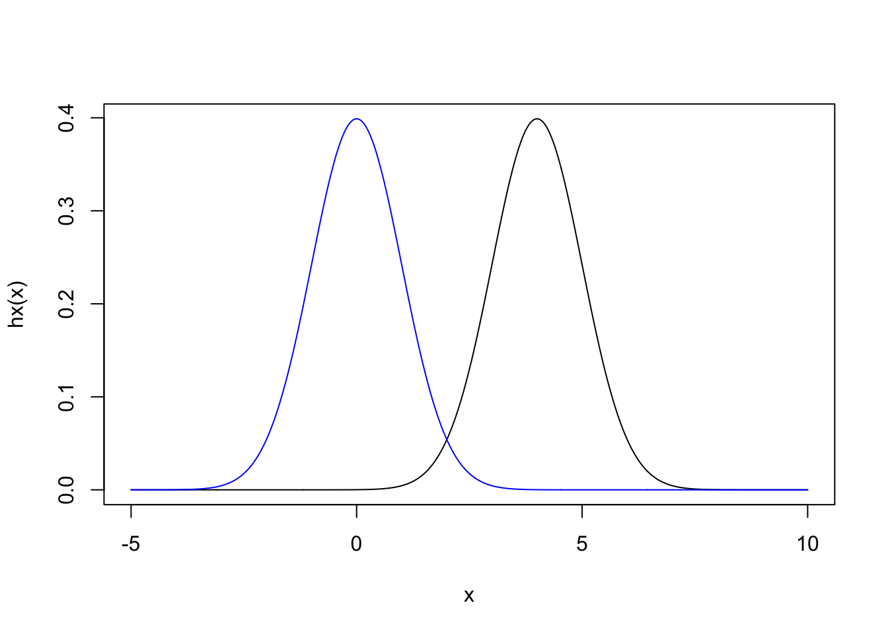
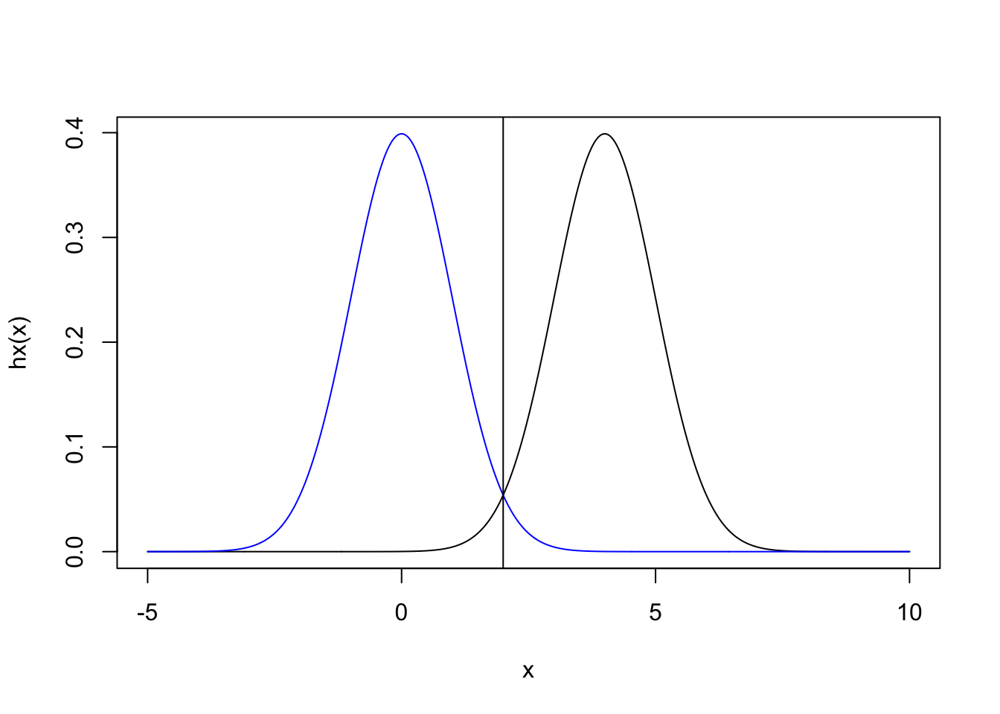

set.seed(1234)
hx <- function(x) {
return(dnorm(x - 4))
}
x <- seq(-5, 10, length.out = 1000)
plot(x, hx(x), type = "l")
points(x, dnorm(x), col = "blue", type = "l")
Patrick Sadil
November 10, 2018
This post attempts to provide a brief intro to importance sampling, presenting a relatively simple situation in which importance sampling enables a speedup in Monte Carlo by reducing the variance of the estimate.
A lot of the material will be an effort to remember material that was taught to be in a Stochastic Processes and Applications class. This post should be though of as my notes on the course notes, with supplementation by https://www.statlect.com/asymptotic-theory/importance-sampling. That is, it can safely be assumed that any content comes from those notes, excluding errors (which will be due to my translation)1.
Importance sampling comes up in the context of Monte Carlo, (MC) applications as a technique for reducing the variability in the MC estimator. As a reminder, MC can be used to estimate the expected value, \(\mu\), of a random variable, \(X\).
\[ \mu = \mathbb{E}[h(x)] = \int h(x)p_X(x)\,dx \]
The idea of Monte Carlo is that this expectation can be estimated by drawing \(S\) samples from the distribution \(p_X\), where \(X \sim p_X\)
\[ \hat{\mu} =\frac{1}{S}\sum_{s=1}^S h(x_s) \]
where the subscript on \(x\) implies the \(s^th\) draw of \(X\), and the hat over \(\mu\) indicates that the result is an estimate. Note that, since we’re starting from that equation, it is assumed that there is some way to produce random samples from the distribution \(p_X\), and that the function, \(h\) is calculable for any \(X\). Also, \(h\) might be something as simple as \(h(x) = x\) if the expectation should correspond to the mean of \(x\)].
This is a powerful idea, though a general downside is that some \(\mu\) require many samples to obtain a reasonable estimate. The MC Standard Error (MCSE) provides an estimate of the approximation error, which is \(\frac{1}{n} Var(h(X))\). This provides a metric by which to gauge different algorithms. In particular, if all else is equal, the estimator with lower variance will can obtain a given level of precision with a lower \(S\).
The basic idea with Importance Sampling (IS) is to draw samples from some alternative distribution, \(p_Y\), which has the same support as \(p_X\), then reweight those samples in accordance with the difference between \(p_X\) and \(p_Y\).
\[ \begin{aligned} \mathbb{E}[h(x)] & = \int h(x)p_X(x) \,dx & \textrm{definition of expectation} \\ & = \int h(x)\frac{p_X(x)}{p_Y(x)}p_Y(x) \,dx & \textrm{multiplication by 1, assuming same support} \\ & \int h(y)\frac{p_X(y)}{p_Y(y)}p_Y(y) \,dy & \textrm{assuming same support} \\ & = \mathbb{E} \left[h(y)\frac{p_X(y)}{p_Y(y)} \right] & \textrm{our new importance sampling estimator} \end{aligned} \]
Recognize that there will often not be a single unique \(p_Y\). The goal is to find a \(p_Y\) that results in lower MCSE. The MCSE for the importance sampling estimator is \(\frac{1}{n}Var\left[h(y)\frac{p_X(y)}{p_Y(y)} \right]\). That will be used to gain an intuition for how to choose a useful \(p_Y\).
One way to think about importance sampling is that, if we could sample from \(h(y)\frac{p_X(y)}{p_Y(y)}\) such that the result were constant, the variance would be 0, and so we’d only need a single sample. To see why, note that, for a constant \(c\)
\[ \begin{aligned} h(y)\frac{p_X(y)}{p_Y(y)} & = c \\ \implies p_Y(y)c & = h(y)p_X(y) \\ \implies p_Y(y) & \propto h(y)p_X(y) \\ \end{aligned} \]
That is, \(h(y)\frac{p_X(y)}{p_Y(y)}\) will be constant whenever \(p_Y(y)\) is proportional to \(h(y)p_X(x)\).
\[ \begin{aligned} p_Y(y) & = \frac{h(y)p_X(y)}{\int h(y)p_X(y)\,dy} \\ \implies p_Y(y) & = \frac{h(y)p_X(y)}{\mathbb{E}[h(X)]} \\ & = \frac{h(y)p_X(y)}{\mu} & \textrm {definition of }\mu \end{aligned} \]
Plugging this distribution into the IS estimator
\[ \begin{aligned} \frac{1}{S} \sum_{s=1}^S \frac{h(Y_s)p_X(Y_s)}{p_Y(Y_s)} & = \frac{1}{S} \sum_{s=1}^S \frac{h(Y_s)p_X(Y_s)}{\frac{h(Y_s)p_X(Y_s)}{\mathbb{E}[h(X_s)]}} \\ & = \frac{1}{S} S\mu \\ & = \mu \end{aligned} \]
So, regardless of \(S\), the resulting estimator is always \(\mu\).
That’s almost useful, but this means that to get an optimal \(p_Y\) we need to know \(\mathbb{E}[h(X)]\), which is by definition the \(\mu\) that we’re trying to estimate. Still, knowing what is optimal provides the intuition for why importance sampling works.
There are two ideas going on here. First, the optimal \(p_Y\) is one which places higher density on regions where \(h(X)\) is high, as compared to \(p_X\). Those “important” values are the ones that will determine the result of \(h(x)\), so those are the ones that need to be altered the most (going from \(p_X\) to \(p_Y\)). Then, the second idea is that when averaging, we must account for the oversampling of these points – downweighting them by however much they were oversampled, which is the ratio \(\frac{p_X(y)}{p_Y(y)}\).
Here’s an example of this working out. The value we’re trying to estimate will be, for \(X \sim N(0,1)\)
\[ \mu = \int \phi(x-4)p_X(x)\,dx \]
where \(\phi\) is the standard normal density function. This \(h\) is such that only values near 4 provide much contribution to the average.
set.seed(1234)
hx <- function(x) {
return(dnorm(x - 4))
}
x <- seq(-5, 10, length.out = 1000)
plot(x, hx(x), type = "l")
points(x, dnorm(x), col = "blue", type = "l")
However, \(X\) will only rarely contain values that are near 4. Hence, the variance of the estimation will be relatively high. We can get an explicit formula for the variance.
\[ Var(h(x)) = \mathbb{E}[h(x)^2] - \mathbb{E}[h(x)]^2 \]
A formula that involves calculating the expected value of this function
\[ \begin{aligned} \mathbb{E}[h(x)] & = \int_{-\infty}^{\infty} \left(\frac{\exp(- \frac{x^2}{2})}{\sqrt{2\pi}} \right)\left(\frac{\exp(- \frac{x^2}{2})}{\sqrt{2\pi}} \right) dx \\ & = \int_{-\infty}^{\infty} \frac{\exp (- x^2 + 4x - 8 )}{2\pi} dx \\ & = \frac{1}{2\pi} \int_{-\infty}^{\infty} \exp (- x^2 + 4x - 8 ) dx\\ & = \frac{1}{2\pi} \sqrt{\pi}\exp \left(\frac{4^2}{4}-8 \right) & \textrm{en.wikipedia.org/wiki/Gaussian_function} \\ & = \frac{1}{2 \exp(4) \sqrt{\pi}} \end{aligned} \]
Which we’ll save for now to use later
Returning to the variance calculation
\[ \begin{aligned} Var(h(x)) & = \left[ \int_{-\infty}^{\infty} \left(\frac{\exp(- \frac{(x-2)^2}{2})}{\sqrt{2\pi}} \right)^2 \left(\frac{\exp(- \frac{x^2}{2})}{\sqrt{2\pi}} \right) \,dx \right] - \mu^2 \\ & = \frac{1}{2\sqrt{2}\pi^{3/2}} \int_{-\infty}^{\infty} \exp\left(-\frac{3}{2}x^2+8x-16 \right) \,dx - \mu^2 \\ & = \frac{1}{2\sqrt{2}\pi^{3/2}} \sqrt{\frac{\pi}{3/2}}\exp \left(\frac{8^2}{6} -16 \right) \\ & = \frac{1}{2 \pi \sqrt{3} \exp(16/3)} - \mu^2 \end{aligned} \]
Using an MC estimate,
Note also that the estimate (our target), is also accurate
Now, let’s instead construct and IS estimator. One intuitive (but by no means optimal) attempt would be to use \(Y \sim N(4,1)\), a distribution that matches with \(h(x)\) perfectly. Indeed, that will provide an accurate answer
[1] 0.005194268But, it turns out that the variance is about the same as before.
This is a somewhat subtle point of the derivation provided above. We don’t just want a distribution that will be highest here \(h(x)\) is high. Instead, what we actually need is a distribution that will be highest when \(h(x)p_X(x)\) is high. That will be exactly where the two distributions intersect, at 2.
x <- seq(-5, 10, length.out = 1000)
plot(x, hx(x), type = "l")
points(x, dnorm(x), col = "blue", type = "l")
abline(v = 2)
[1] 0.005165774[1] 4.131799e-06The answer is still accurate, but the variance has been reduced by many factors. This means that a desired level of MCSE could be achieved with many fewer samples.
One final demonstration, remember that \(h(x)p_X(x)\) describes a distribution. Hence it would be a mistake to try a \(p_Y\) that placed all of the density around that point of intersection. For example, let’s try \(Y \sim N(2,0.1)\). Although that is centered on the region that contributes the largest values to the expectation, the largest values alone do not define the expectation; too much of the tails of \(h(x)\) are not included. Using this results is the worst variance.
this page is mostly a study page for upcoming comprehensive exams↩︎